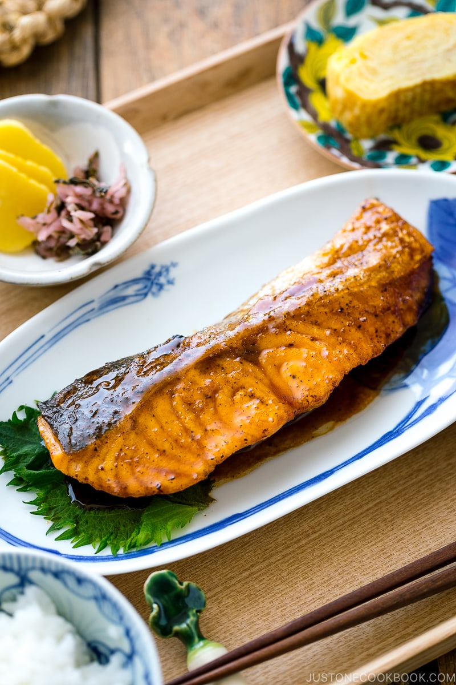

Teriyaki Salmon

Description
Authentic Japanese teriyaki salmon, it's a light and savory meal that's
quick and easy to make. Great option for any night of the week and can
be paired with white rice and steamed vegetables for a full meal.
Ingrediants
For the Teriyaki Sauce
- 1 tablespoon sake or rice vinegar
- 1 tablespoon mirin
- 2 tablespoons soy sauce
- 1 tablespoon brown sugar
For the Salmon
- 2 skin-on salmon filets
- Salt and fresh ground black pepper
- 1 tablespoon flour
- 1 tablespoon vegetable oil
- 1 tablespoon butter
1-2 tablespoons of sake
Instructions
- Combine sake, mirin, soy sauce, and brown sugar. mix well to
dissolve the sugar and setr aside for later.
- Rinse and pat dry the salmon. Season the meat with salt and
pepper before sprinkling with the flour and coating evenly.
Doing this helps retain its umami flavor and juiciness.
- Heat a frying pan over medium heat. When the pan is hot, add
1/2 Tbsp neutral oil and 1 Tbsp unsalted butter. Take care not to
burn the butter. If the frying pan gets too hot, reduce the heat
or remove it from the heat temporarily. Then, sear the skin of
the salmon fillets: One at a time, press the skin against the hot
frying pan's surface for 15 seconds before laying it skin side
(or presentation side) down in the pan. Repeat with the remaining
salmon. Tip: The presentation side (skin side) should
go down into the pan first because you will get the best browning
on the first side that hits the clean pan.
- Cook the salmon for 3 minutes, or until the bottom is golden
brown, and then flip.
- To the pan, add 1-2 Tbsp sake—1 Tbsp for thin fillets and no
more than 2 Tbsp for thicker fillets. Cover the pan with a lid
and reduce the stove's heat to low. Steam the salmon for about
3-5 minutes, depending on the fillet thickness. If the sake has
evaporated but the salmon isn't cooked through yet, add another
tablespoon of sake and continue steaming.
- Cook the salmon until it registers an internal temperature of
125-130°F at the thickest part of the fillet, then transfer the
salmon to a tray or plate. Cooking time can vary between 4-8
minutes, depending on thickness.
- Add the teriyaki sauce ingredients to the pan and increase the
heat a bit. When the sauce starts to boil, add the salmon back to
the pan. Begin to spoon the sauce over the sallmon until the sauce
starts to thicken.
- Transfer the salmon to a plate and drizzle the sauce on top.